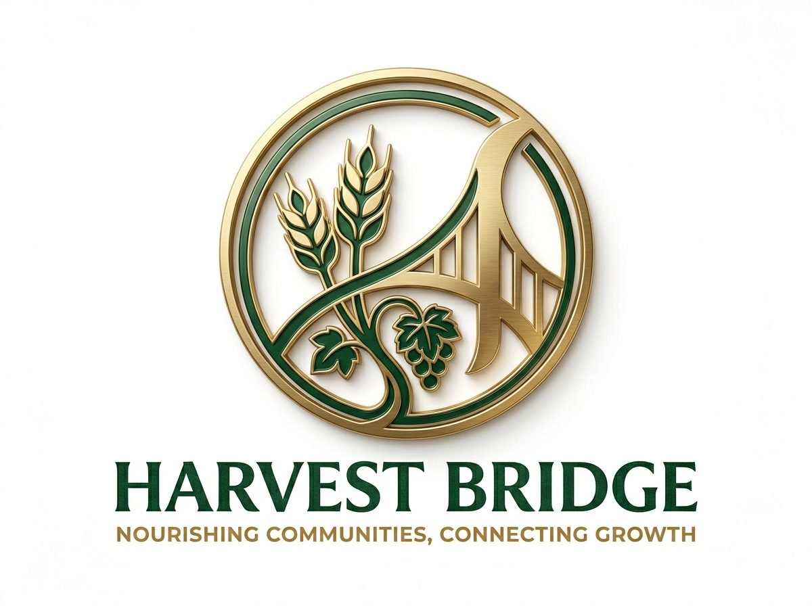
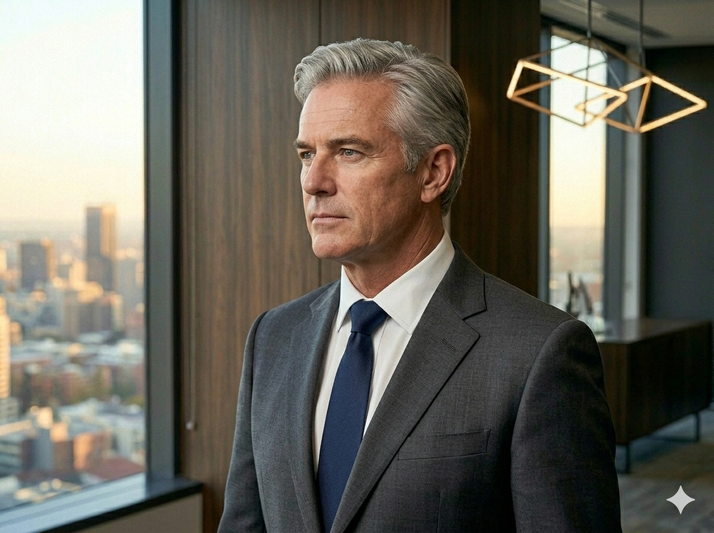

Nourishing Communities,
Connecting Growth
Amina has prepared three options for tomorrow's board. Each carries a different theory of value, a different model of growth, and a different answer to the question: what is HarvestBridge really for?
Fix HarvestTable. Find the right executive chef to turn the store into a destination, not just a retail shelf. Invest in brand experience, renegotiate the lease, and build the story Meridian originally funded: premium African food innovation in a flagship format. The manufacturing base funds the experiment until HarvestTable breaks even.
Exit retail. Close or divest HarvestTable and recommit entirely to the cooperative and manufacturing core. Rebuild cooperative supplier share to 85%+. Invest in Limpopo farmer capacity. Pursue B-Corp certification. Reframe the Meridian story: not a premium retail play, but Africa's most trusted agri-food manufacturer supplying institutional buyers.
Neither fix Sandton nor abandon it. Create a new market segment that did not previously exist. Pursue dual Rainforest Alliance and Fair Trade certification to access European and East Asian premium import markets. The cooperative becomes the origin story for a certified ethical supply chain. HarvestTable pivots to a B2B trade and wholesale hub.
These are Amina's options. She has not told the board which one she intends to recommend. Ask her why when you speak to her.
Some of what appears here has not been disclosed to the board. Ask Amina what she plans to reveal, and what she does not.

Amina co-founded HarvestBridge with Sipho Dlamini in 2014 as a Limpopo smallholder cooperative. Over eleven years she has taken the company through three transformation phases. Tonight she is composed. Whether that composure is earned or performed is a question worth asking.

Tebogo joined from a large-scale commercial farm operation and has spent three years building HarvestBridge's manufacturing infrastructure. He is precise, process-driven, and deeply uncomfortable with ambiguity. The board meeting makes him more uncomfortable than most.

Nadia holds a doctorate in organisational psychology and has spent a decade in high-growth manufacturing environments. She is careful with language and exact in her documentation. Her two previous memos were buried as board footnotes. She has not raised this with Amina directly, but she remembers it precisely.
Priya holds a doctorate in consumer behaviour and has built two brand identities from scratch before joining HarvestBridge. She is the only executive who has formally modelled all three strategic directions against consumer data. Her recommendation is Direction 3. She has not been asked for it officially.

Sipho co-founded HarvestBridge with Amina and holds a direct relationship with many of the Limpopo cooperative farmers. When the PE deal closed, his role was reclassified from Operations Co-Director to Community Liaison. He has never said anything about it to Amina.

Marcus has been in private equity for nineteen years and has been through six board meetings like tomorrow's. He is not cruel. He is not sentimental. His 7-year investment thesis assumes a trade sale or JSE listing by 2030. He has requested 45 minutes with Amina before the main session. His agenda item is undisclosed.
Before we begin
The board meets tomorrow morning. Amina has three directions on the table and one night to decide what to recommend. This is the first time she has asked for outside perspective. Enter your name so she can address you directly.
Do not close or refresh this tab mid-conversation. Your session is not stored server-side. Your transcript is your only record.
This is a formative learning activity. No submission required.